Jede Seite ist ein Bildschirm in 375 × 812. Unter jedem Bildschirm lässt sich das Design umschalten; die Wahl wandert über die Links mit. Die Beschreibung dazu steht in docs/design/README.md.
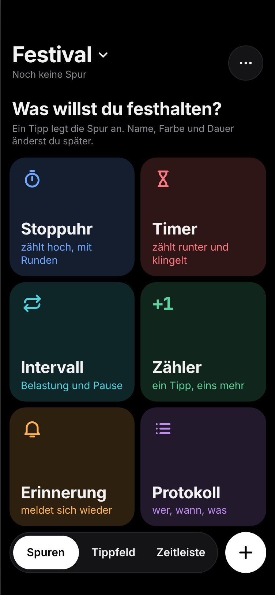
1.1 Leerer Start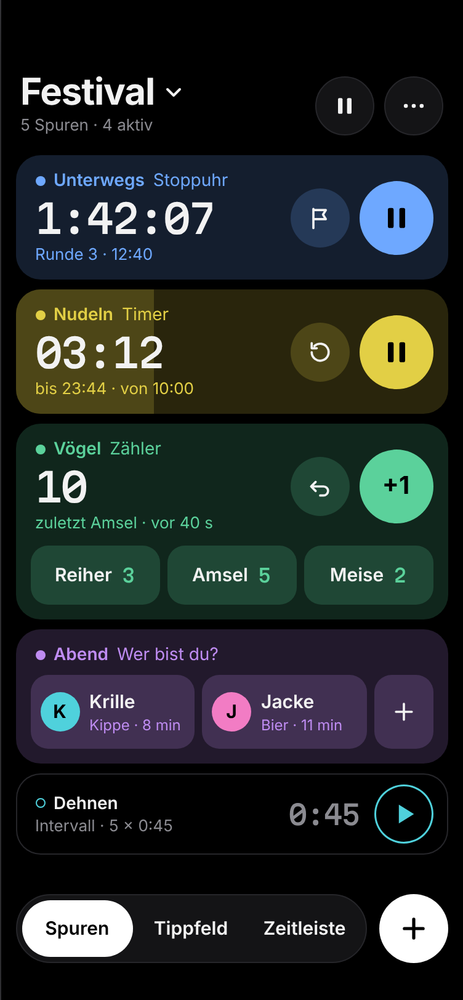
1.2 Spuren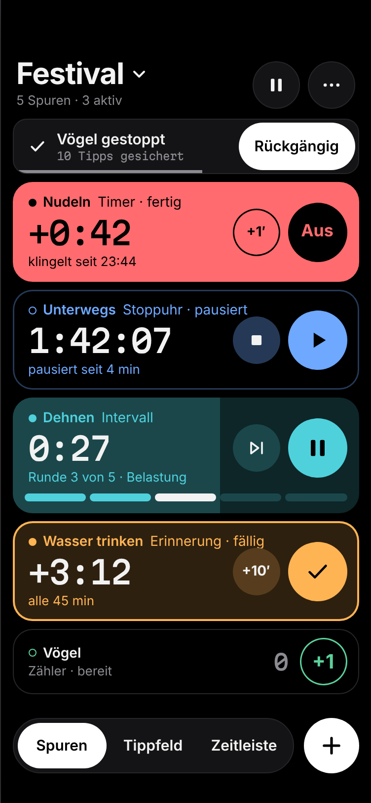
1.3 Zustände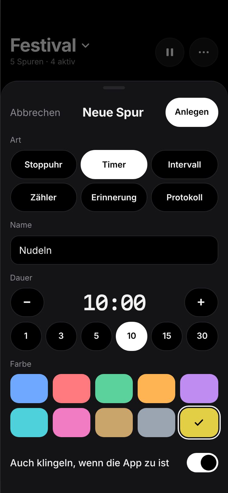
1.4 Neue Spur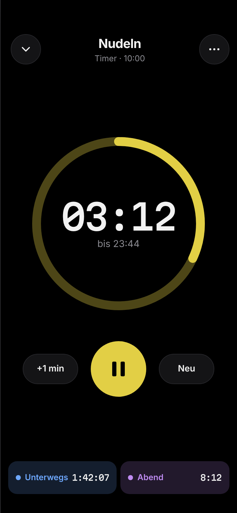
1.5 Fokus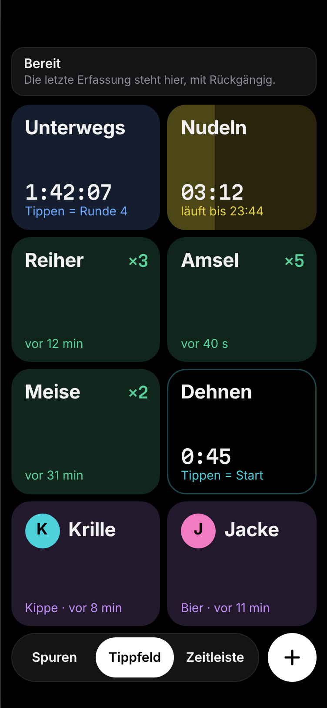
2.1 Tippfeld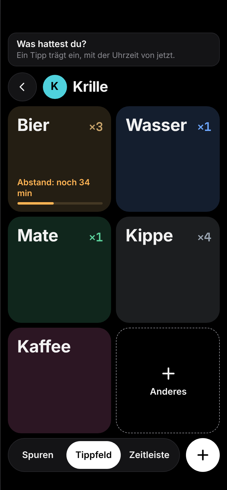
2.2 Was?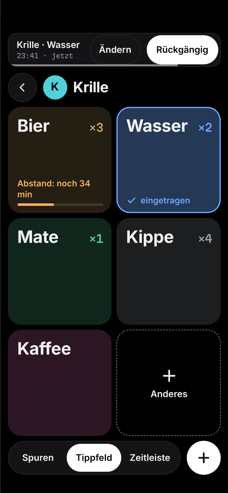
2.3 Eingetragen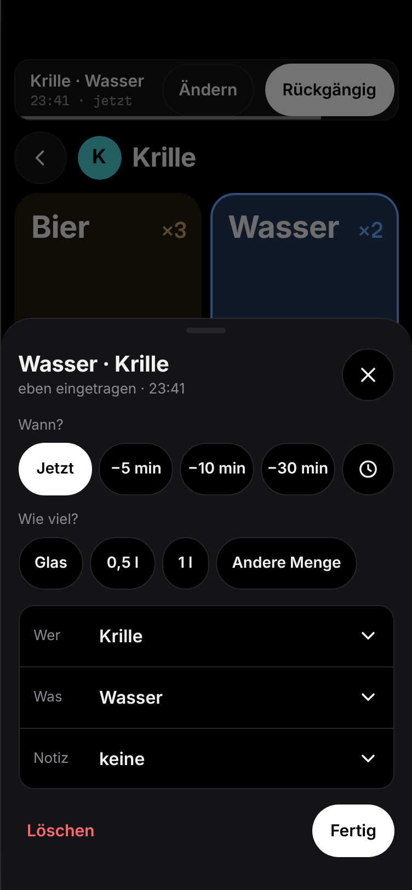
2.4 Ändern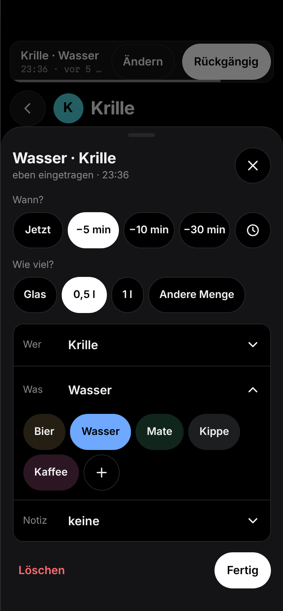
2.5 Ändern, aufgeklappt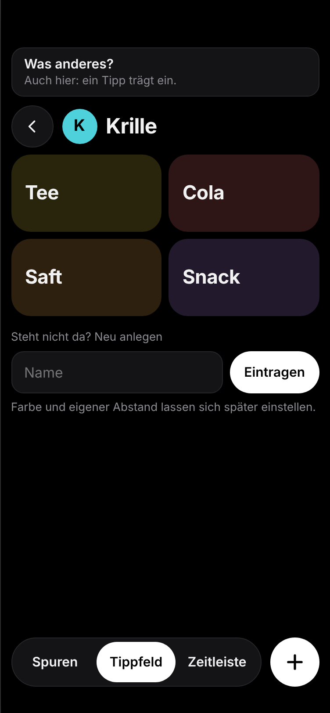
2.6 Anderes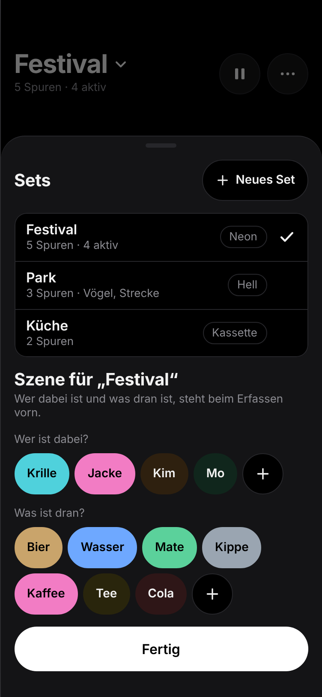
2.7 Sets und Szene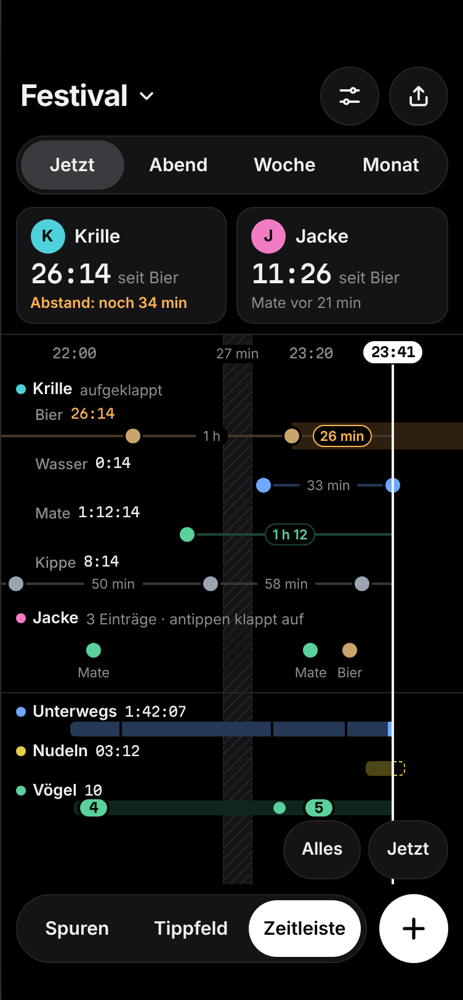
3.1 Jetzt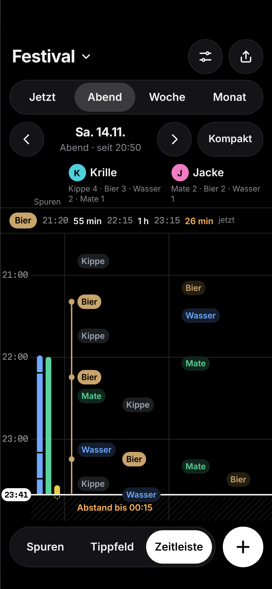
3.2 Abend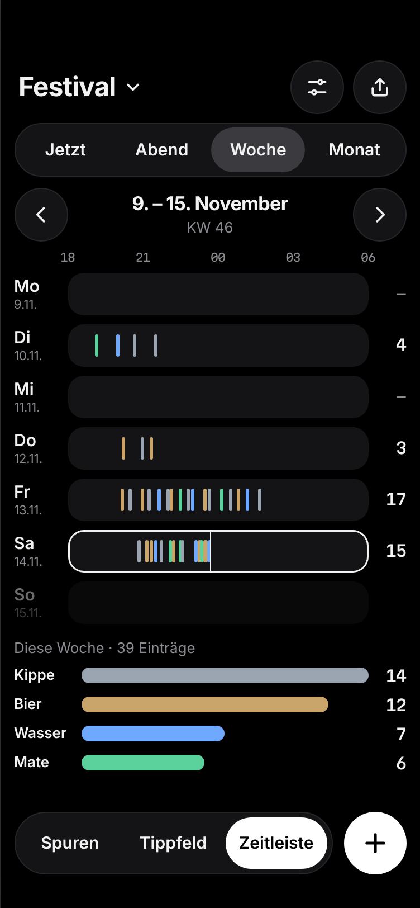
3.3 Woche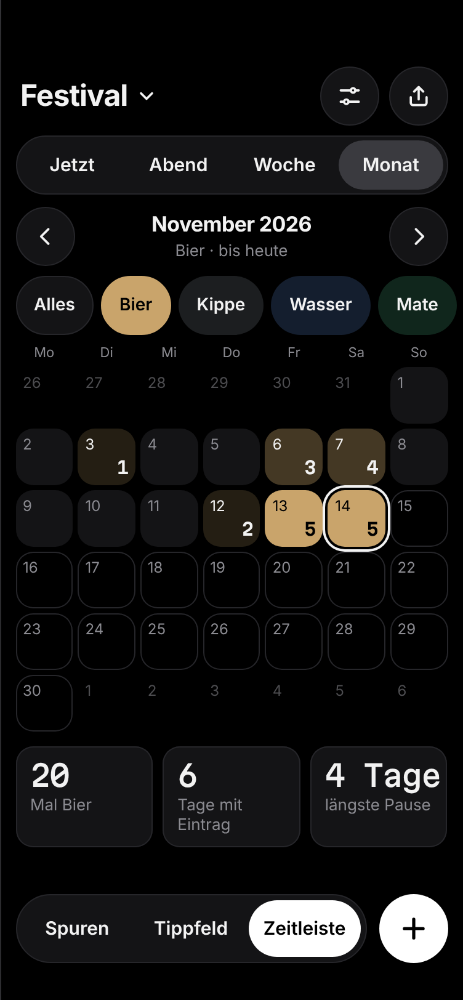
3.4 Monat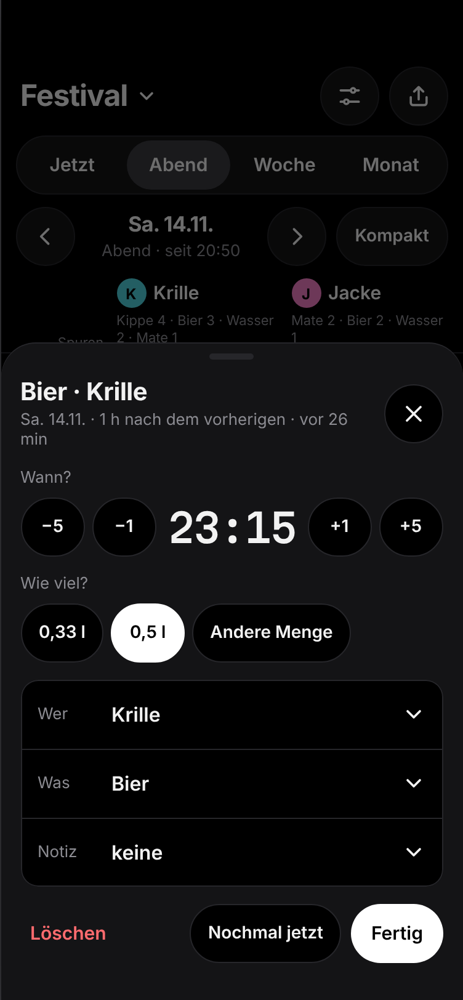
3.5 Eintrag